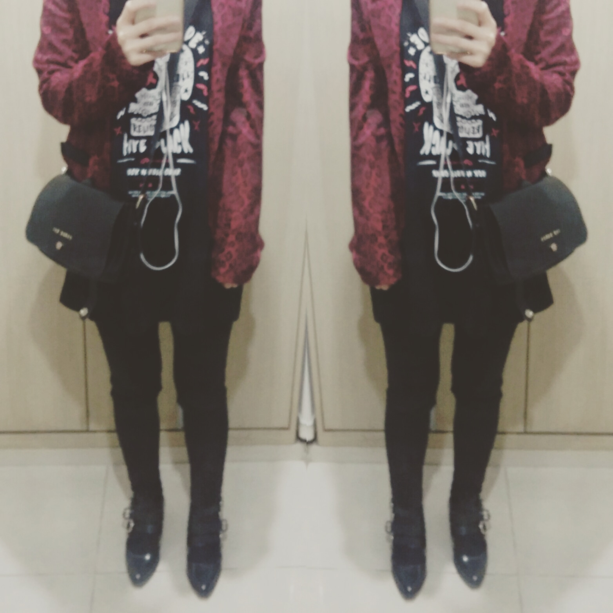
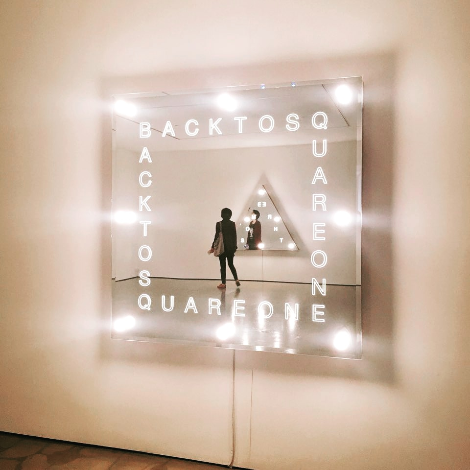
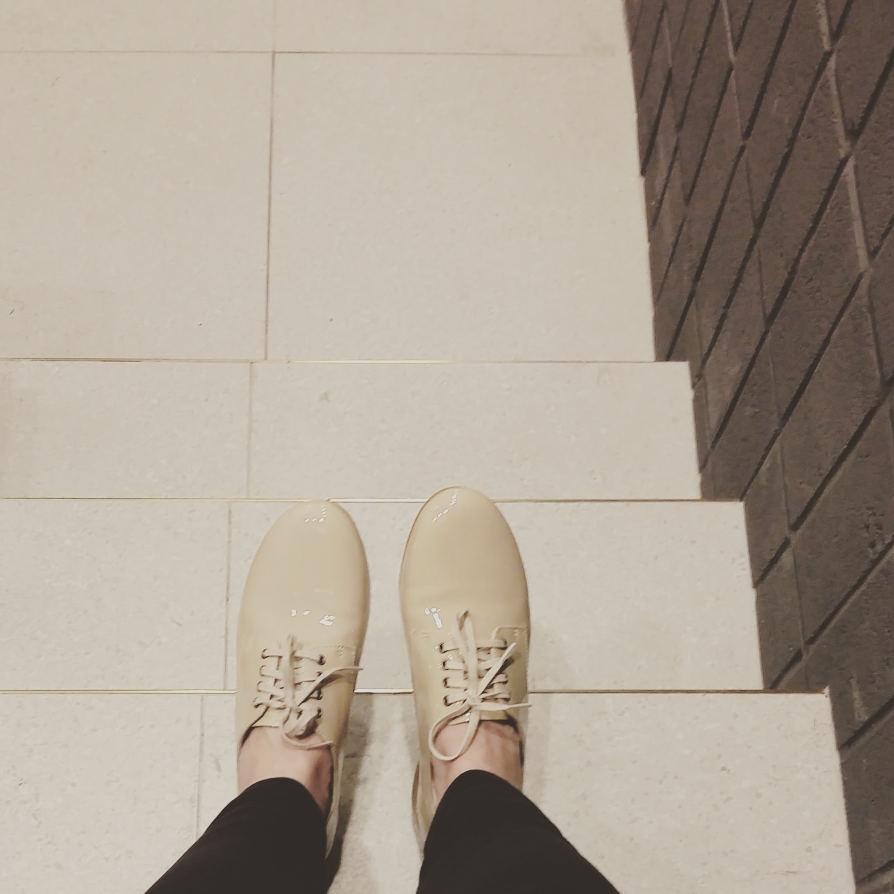

가끔씩 생각날때 올려보는 OOTD :3

자켓: 더테라피
탑: religion
바지: 유니클로
슈즈: 토가풀라
가방: 테드베이커
토가슈즈 첨에 맨발로 신었을때 발목나가는줄 알았는데 ㅋㅋㅋㅋㅋㅋㅋㅋㅋㅋㅋ
버클좀 느슨하게 만들고 양말신으니까 편합니당 :D :D :D
여전히 걸을때 절그럭 거리는 소리 장난아니구요 ㅋㅋㅋㅋ
뻘겅 호피무늬 자켓에 신발까지 박력만점이었던 날

똑같은 옷에 가방과 신발만 바뀐날
주말에 현대갤러리 전시회 보고 왔습니다
가방: V&A 알렉산더맥퀸 전에서 구입한 에코백
신발: 허드슨 리본슈즈

클락스 누드톤 옥스포드슈즈
생각보다 안편해요 ;ㅂ;
첫날 신고 고생했음;;